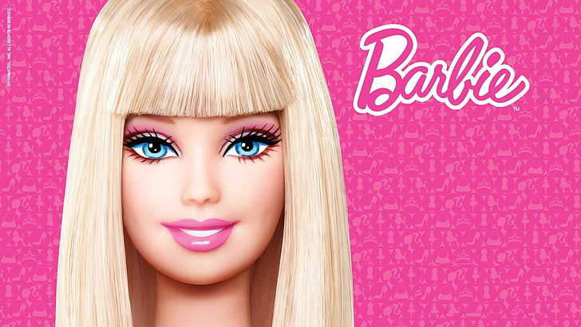
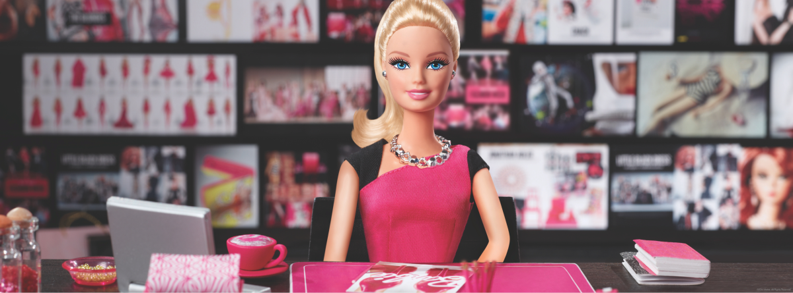

Soy Barbie, experta en TODO desde 1959. Me reinvento más que un filtro de Instagram y siempre llego fabulosa, incluso salvando el mundo o pilotando una nave espacial con tacones.

👩🏼🚀 Astronauta Espacial con Estilo
· Piloté una nave intergaláctica sin despeinarme ni romperme una uña.
· Descubrí nuevos planetas mientras combinaba el casco con el outfit.
· Demostré que el espacio también es rosa.
👩🏼⚕️ Doctora Salvadora de Vidas (y de peinados)
· Curé enfermedades imposibles con bata rosa y actitud positiva.
· Mantuve la calma en urgencias sin perder el gloss.
· Organicé guardias médicas… pero con playlists de pop.
🕵🏼♀️ Detective privada glam
· Resolví misterios imposibles sin despeinarme ni borrar el gloss.
· Seguí pistas con stilettos y estilo.
· Demostré que se puede ser brillante… y brillante literal.
👠 Diseñadora de moda icónica
· Creé tendencias que aún no sabías que necesitabas.
· Creé colecciones que rompieron pasarelas (y corazones).
· Convertí cualquier look en tendencia mundial en 5 minutos.
· Diseñé outfits que combinan poder, pink y personalidad.
Y esto es solo una pequeña muestra… porque tengo MUCHAS más experiencias, tantas que necesitaría otra Dreamhouse solo para guardarlas 💗✨